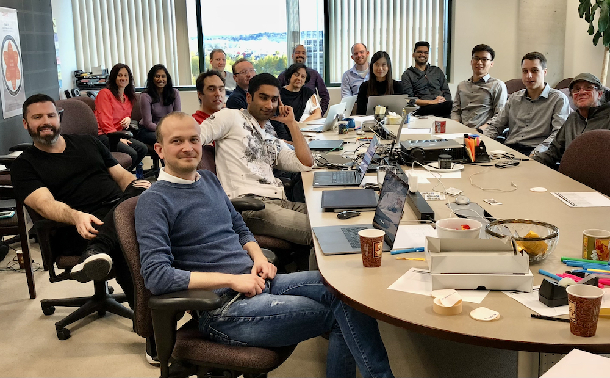
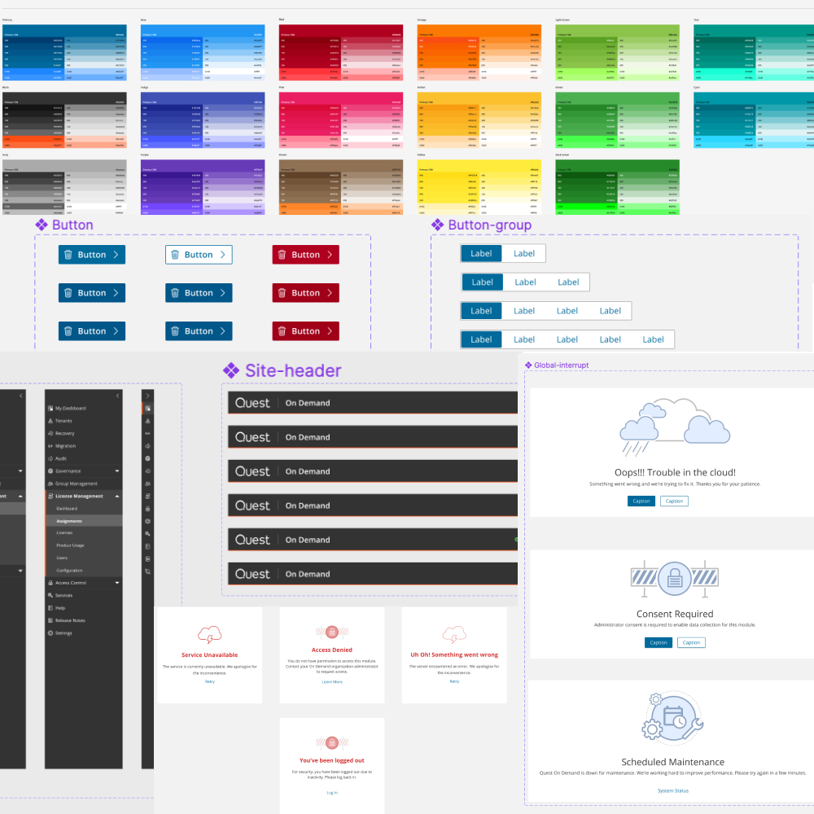

SYSTEMS & PRACTICE · QUEST SOFTWARE
A shared system starts with a team that can share.
At Quest, I helped turn an eight-module enterprise SaaS product from a set of disconnected experiences into a more coherent platform—by first connecting the people making it.
THE CONTEXT · QUEST SOFTWARE · 2018–2022
The product had grown faster than its shared language.
When I joined Quest On Demand, designers were working independently across Canada, Russia, and China. The modules had different visual patterns and interactions, and the design team had little shared visibility into the product as a whole. The inconsistency users experienced reflected a collaboration gap behind the scenes.
I was the sole UX designer on the core product at first. Alongside designing product experiences, I took on the work of finding colleagues, understanding their constraints, and making a case for a more connected practice.

THE LEADERSHIP WORK
Build the conditions for consistency.
I started with one-to-one conversations and regular design meetings, giving colleagues a place to compare work and see the platform beyond their own module. I advocated for an in-person UX/UI summit and secured leadership support to bring the team together in 2019. That time helped designers, product managers, and developers form relationships, set shared goals, and make collaboration tangible.
The system was not a UI kit handed down by one designer. Four designers researched, shaped, reviewed, and refined it together over a year, while teams began applying shared patterns to active product work.
THE SYSTEM
A product foundation people could contribute to.
- Align the tools: moved the team into shared Sketch files with Abstract version control so designers could branch and contribute without blocking one another.
- Set a useful foundation: researched existing systems and used Angular/Material as a practical reference because it aligned with the engineering stack.
- Design in the open: established shared styles, colours, and reusable components with team review and iteration.
- Partner with engineering: worked with the core development team on a foundation component library that module teams could inherit and implement.

EVOLUTION
Keep the practice adaptable as the organization changes.
As teams and tools changed, I led a later rebuild of the system in Figma, refining components and making collaboration easier for the new team. We also introduced Storybook so developers could document and mirror the implementation of shared components. The work evolved from establishing a design language to maintaining a connected design-and-code practice.
OUTCOME
From isolated modules to a more connected platform.
Designers gained a shared vocabulary and a way to contribute to the whole product. Engineering gained a reusable foundation aligned with the implementation stack. Quest’s resume records that, once the system was aligned with development, feature delivery across all eight modules moved from months to weeks per sprint. The lasting result was not only greater consistency, but a team practice capable of sustaining it.
Some product details are intentionally generalized to respect company ownership and confidentiality.